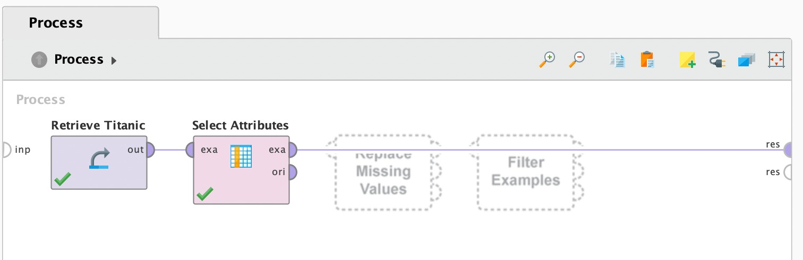
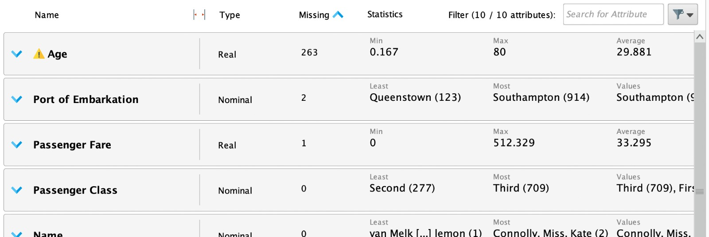
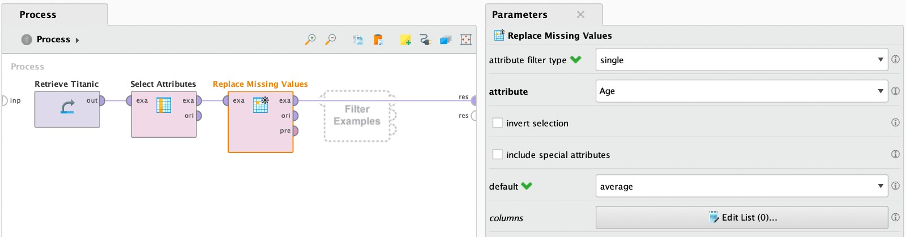
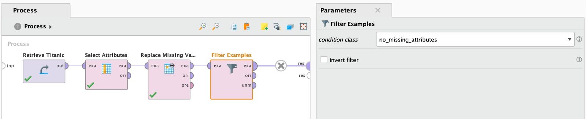

Tutoriales RapidMiner: Prepare data
Handling Missing Values
El objetivo de estos tutoriales es mostrar como realizar procesos de preparacion de datos: manejar datos faltantes, normalizacion y deteccion de outliers.
Inicia por obtener el dataset de "Titanic" y analizar sus atributos en profundidad. En base a ese analisis, se determina que los siguientes atributos no aportan valor para la prediccion de la variable objetivo Survived: - Port of Embarkation: ya que independientemente de en que puerto se haya subido al barco, es el ticket el que determina la posicion en el barco. - Cabin: puede inferirse a partir de Passenger Fare - Life Boat: ya que el hecho de que tenga un bote asignado implica que sobrevivio, y es informacion con la que no se va a contar al momento de la prediccion

Luego de eliminados dichos atributos, es hora de analizar los valores faltantes. Se puede observar que el atributo Age cuentan con demasiados valores faltantes (263/1309)

Es necesario tomar una decision. Eliminar el 20% de las observaciones no es una opcion, por lo que el tutorial recomienda reemplazar esos valores faltantes por el valor promedio de edad.

Finalmente, para aquellos registros con atributos faltantes que restan, se usa un operador Filter Examples para eliminarlos. Solo son 3 por lo que tiene sentido simplemente descartarlos

Y de esta forma, finaliza la preparacion de los datos.